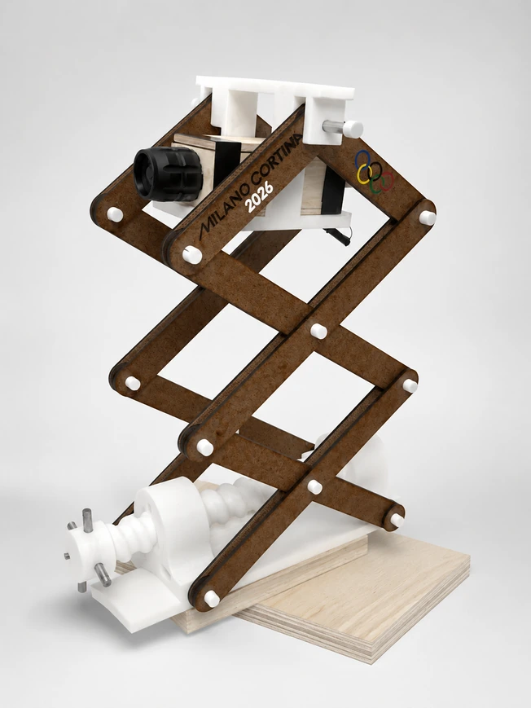

01 / Ideate
Ideate
Explored directional task-lighting concepts for different working positions, tasks, and day-to-night needs.
01 / Product design & mechanical systems
Mechanical design · Task lighting
Designed and built a desk lamp for late-night work in a shared dorm room, with adjustable height, head rotation, and beam width.
Watch lamp videoProject introduction · YouTube
A scissor-lift mechanism, swiveling head, and variable-focus flashlight provide control over the position and spread of the light.
The brief
Living in a shared dorm room meant I often needed to work late without disturbing my roommate. Conventional desk lamps either spilled too much light or lacked the flexibility I wanted for different tasks.
I set out to build a compact lamp that combined a scissor-lift mechanism, a swiveling head, and variable-focus lighting. The design had to provide directional illumination while remaining stable and easy to reposition.
Balance height adjustment, stability, head articulation, and beam control in a single product that would be practical to use every day.
Prototype the movement first, refine the structural geometry, and integrate an adjustable flashlight and its variable-focus optics with custom mechanical components.
Development process
Original sketches and prototypes trace the project’s development. Select an image to look more closely.
01 / Ideate
Explored directional task-lighting concepts for different working positions, tasks, and day-to-night needs.
02 / Design
Developed the scissor-lift geometry, head mechanism, and supporting structure; refined proportions for stability and usability.
03 / Prototype
Used foamboard and straws to explore the mechanism before fabricating and assembling the functional components.
04 / Test & refine
Tested height, articulation, stability, and beam control, then refined friction, movement, and ergonomics.
Engineering the details
I evaluated different adjustment options before settling on a scissor-lift mechanism. The geometry needed to stay stable as the lamp extended, rather than only working well at one height.
An adjustable flashlight provided the variable-focus optics. Integrating it into the lamp allowed the beam to move between a focused spotlight and a wider floodlight without replacing the light source.
Height, head movement, illumination range, and focus influenced one another. Multiple design iterations addressed friction and movement while keeping the complete product usable.
Build notes
| Height | Adjustable from 25 to 80 cm |
|---|---|
| Width | 20 cm |
| Head rotation | 360° |
| Beam | Spotlight to floodlight |
| Weight | Approximately 1 kg |
| Build cost | Approximately US$25 |
Laser-cut wood, 3D-printed plastic, fasteners, a radial ball bearing, an adjustable flashlight, and electrical tape.
Laser cutting, Bambu Lab 3D printing, saws, a drill and drill press, sanding tools, measuring tools, and hand assembly.
Build figures are approximate and reflect the prototype shown.
Outcome & lessons learned
This project taught me to balance function, usability, appearance, and manufacturability around a real user need.
Iterative prototyping helped me refine the mechanism, friction, head movement, and beam control while developing my mechanical design and fabrication skills.
Next project
For internship opportunities in engineering, product design, and hardware development.